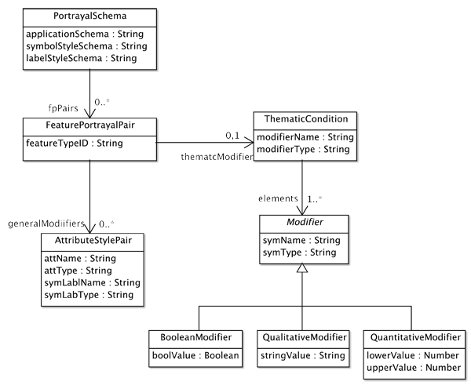
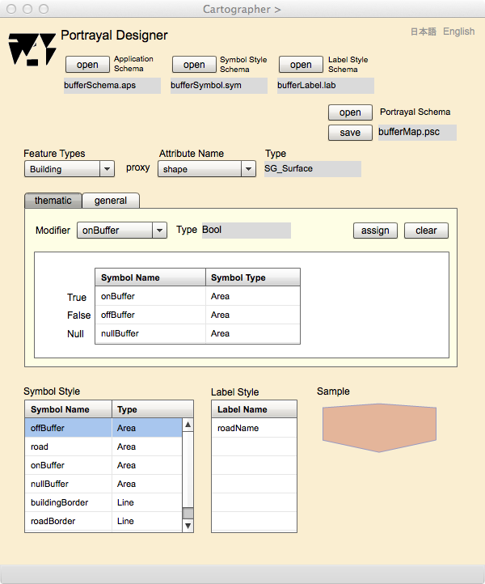

Portrayal Designer (作成中)
描画スキーマのデザイン
地図を描くためには，記号と注記のスタイルのデザインをおこない，それらのスタイルを地物の属性と関連づける必要があります．この関連付けが行われると，属性値を地図上でどのようなスタイルで表現したら良いか，gittok が判断し，地図を描画することができます．Portrayal Designer は，地物の属性と，記号やラベルのスタイルの関連付けを行い，描画辞書を出力するためにあります．
この作業を行うには，描画スタイルのスキーマについて理解すべきです．以下，描画スタイルスキーマの説明を行い，次にPortrayal Designerの操作法を解説します．
描画スタイルスキーマ
描画スキーマとは，地図を描画するに当って，使用する応用スキーマ，記号スタイルスキーマと注記スタイルスキーマを使用して，地物ごとに，描画する属性とそのスタイルをしめすスキーマのことです．描画スキーマを作るためのめたモデルが下に示す描画スタイルスキーマです．

図１．描画スタイルスキーマのクラス図
PortrayalSchema
描画スタイルスキーマ全体ののルートクラスです．使用する応用スキーマ (applicationSchema)，記号スタイルスキーマ (symbolStyleSchema) と注記スタイルスキーマ (labelStyleSchema) を示し，地物型と描画スタイルの対を保存する辞書 (fpPairs) をもちます．
FeaturePortrayalPair
地物型のIDと，それに対応する主題修飾子 (thematicModifier) または一般修飾子 (generalModifier) を示すクラスです．ここで修飾子 (modifier) とは，地物属性を修飾して記号に変更させる情報をさします．
AttributeStylePair
属性・スタイル対 (AttributeStylePair) は，地物属性と，それに対応する記号／注記の対であり，地物属性をどのように描画するかを決めるためのクラスです．属性の名前 (attName)，属性のデータ型 (attType)，そしてそれに対する記号又は注記スタイルの名前 (symLabName)，記号か注記かの区別を示すデータ (symLabType)をもちます．
ThematicCondition
主題条件 (ThematicCondition)は，主題図を描画するために使われる情報です．ここで主題図とは，一定のテーマに絞って作成された地図のことですが，gittok では，主題属性の値をグラフィック表現する地図をさします．具体的には主題属性がブール値をとる場合，それはtrue の場合と， false の場合で，proxy幾何属性の表現を変えます．属性の型が文字列の場合は，その値ごとに，異なる表現をします．さらに，属性の型が数字の場合は，複数の区間を設定して，区間ごとにことなる表現ができるようにします．
ThematicConditionは，proxy幾何属性を修飾する主題属性の名称 (modifierName)と型 (modifierType) を属性としてもちます．また，elementsという役割名で実際にproxyの修飾をするModifierをもちます．
Modifier
これは具体的には，ブール値（BooleanModifier），文字列 (QaulitativeModifier) または数字の区間 (QuantitativeModifier) のどれかになります．修飾属性が一定の値または区間にはいるとき，どの記号（symName、symType）で表現するか，が示されます．
操作画面

図２．Portrayal Designer (thematic) の操作画面
主題修飾のための表示欄
Application Schema
キットが使用している応用スキーマのファイル名が表示されます．
Symbol Style Schema
描画に使用する記号スタイルスキーマのファイル名が表示されます．
Label Style Schema
描画に使用する注記スタイルスキーマのファイル名が表示されます．
Feature Types
どの地物を対象とするか選択します．
Attribute Name
選択した地物のどの属性を修飾するか選択します．
Type
選択された属性の型が表示されます．
Symbol Style
属性に割り当てる記号スタイルを選択します．
Label Style
属性に割り当てる注記スタイルを選択します．
Sample
割り当てる記号や注記のサンプルがここに表示されます．
Portrayal Schema
描画辞書属性と記号または注記スタイルとの関連が全て割り当てられると，それを描画スキーマとしてセーブします．また，描画スキーマを編集するときは，オープンしますが，これらの操作を行うと，ここに描画スキーマの名前が表示されます．
Modifier (thematic)
幾何属性をどの主題属性が修飾するか選択します．
Type (thematic)
修飾する主題属性の型が表示されます．
to be continued!
ボタン
open (Application Schema)
応用スキーマをオープンします．
open (SymbolStyle Schema)
記号スタイルスキーマをオープンします．
open (Label Style Schema)
注記スタイルスキーマをオープンします．
assign
地物属性に対応する記号または注記スタイルを選択してから，このボタンを押すと，スタイルが属性に割り当てられます．
clear
スタイルの割当てを解消するときには，該当する行を選択してから，このボタンを押します．
open (Portrayal Dictionary)
描画辞書をオープンします．
save (Portrayal Dictionary)
描画辞書をセーブします．
日本語
今あなたが読んでいるドキュメントが表示されます．
English
You can read the tutorial written in English.